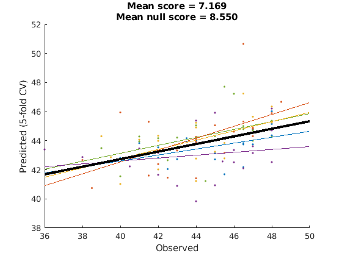
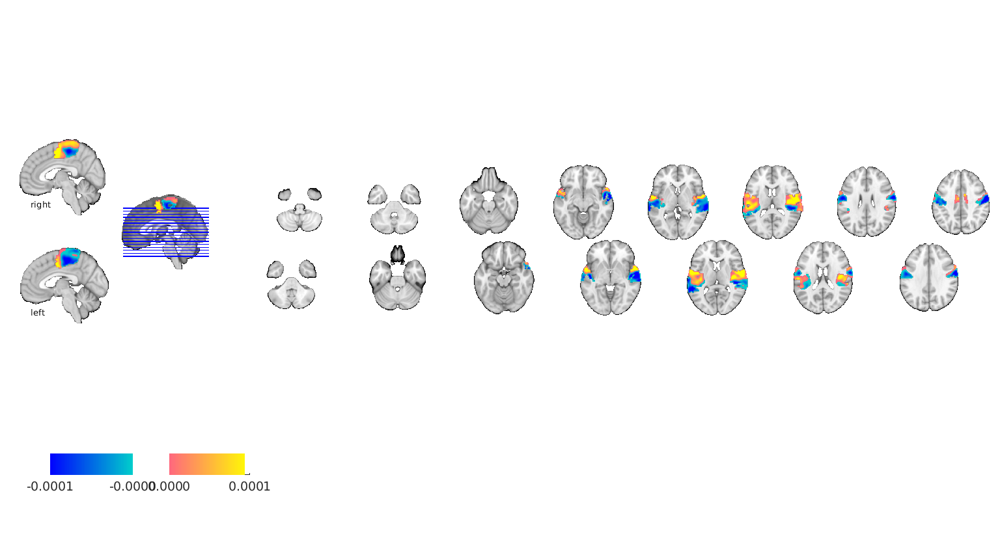
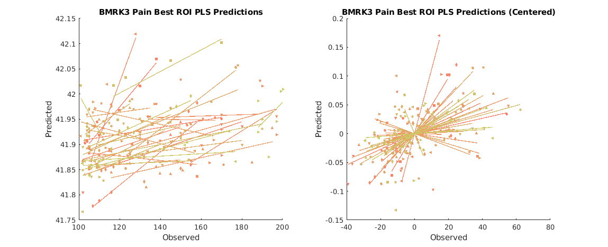
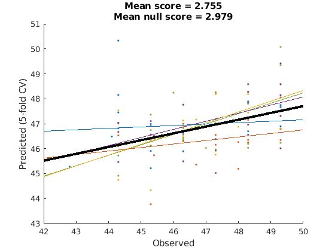

Contents
- import libraries and their dependencies
- parameters you should modify
- load data and masks
- configure inner cross validation loop
- configure region selection loop
- Evaluate overall model performance
- plot best region
- test on new data
- apply model performance estimator to new data
- Additional comments
- utility functions
% this script identifies the most predictive region, and estimates its % performance for a single dataset % The model is then tested on a second dataset % % We use MSE as our performance metric throughout, but given how noisy fMRI % data is at the between subject level, this may not be the best choice. % Look in the scorers folder of ooFmriDataPredictML for other options and % examples of how you might go about designing your own. I kind of suspect % a random slope, random intercept mixed model likelihood function would be % best, however it would be much slower to evaluate. close all; clear all;
import libraries and their dependencies
addpath('/projects/bope9760/spm12'); % canlabCore dep addpath(genpath('/projects/bope9760/software/canlab/CanlabCore')); % canlab_single_trails* and ooFmriDataObjML dep addpath(genpath('/projects/bope9760/software/canlab/Neuroimaging_Pattern_Masks')); % canlab_single_trails* and ooFmriDataObjML dep addpath(genpath('/projects/bope9760/software/canlab/MasksPrivate')); % canlab_single_trails* and ooFmriDataObjML dep addpath(genpath('/projects/bope9760/software/canlab/CanlabPrivate')); % canlab_single_trails* and ooFmriDataObjML dep addpath(genpath('/work/ics/data/projects/wagerlab/labdata/projects/canlab_single_trials_for_git_repo/')); % canlab_single_trials dep addpath(genpath('/projects/bope9760/software/canlab/canlab_single_trials')); % data repo addpath(genpath('/projects/bope9760/software/canlab/canlab_single_trials_private')); % data repo addpath('/projects/bope9760/software/combat/ComBatHarmonization/Matlab/scripts'); % ooFmriDataObjML dep addpath(genpath('/projects/bope9760/software/canlab/ooFmriDataObjML')); % an MVPA modeling framework if ~isempty(gcp('nocreate')) delete(gcp('nocreate')); end
parameters you should modify
update this to match whatever your parallel pool is. Don't count hyperthreads, only physical cores.
parpool(8)
Starting parallel pool (parpool) using the 'local' profile ...
connected to 8 workers.
ans =
Pool with properties:
Connected: true
NumWorkers: 8
Cluster: local
AttachedFiles: {}
AutoAddClientPath: true
IdleTimeout: 360 minutes (360 minutes remaining)
SpmdEnabled: true
load data and masks
nsf = load_image_set('nsf'); nsfStim = avgByStimLvl2(nsf, double(categorical(nsf.metadata_table.subject_id)), nsf.metadata_table.T); % not the same as single trial predictions, but faster so good for a demo nsfStim = nsfStim.apply_mask(fmri_mask_image(which('gray_matter_mask.img'))); buckner = load_atlas('buckner'); buckner.probability_maps = []; % these break resample space right now, so let's drop them buckner = buckner.resample_space(nsf); % this will allow for a speed up in fmri2VxlFeatTransformer buckner = buckner.apply_mask(fmri_mask_image(which('gray_matter_mask.img'))); nsfStim = nsfStim.apply_mask(buckner); % this will drop subcortical and cerebellar regions that buckner doesn't have
Loading: /work/ics/data/projects/wagerlab/labdata/projects/canlab_single_trials_for_git_repo/nsf_data.mat
Number of unique values in dataset: 136162681 Bit rate: 27.02 bits
Number of unique values in dataset: 329041 Bit rate: 18.33 bits
Number of unique values in dataset: 329041 Bit rate: 18.33 bits
Source: NSF data aggregated from Tor Wager's single trials Google Drive
____________________________________________________________________________________________________________________________________________
Wager, et al. (2013) New England Journal of Medicine
Atlas, et al. (2014) Pain
____________________________________________________________________________________________________________________________________________
Summary of dataset
______________________________________________________
Images: 1149 Nonempty: 1149 Complete: 1149
Voxels: 329694 Nonempty: 329694 Complete: 328249
Unique data values: 136162680
Min: -1312.863 Max: 888.306 Mean: -0.351 Std: 21.183
Percentiles Values
___________ __________
0.1 -134.41
0.5 -81.216
1 -63.577
5 -31.933
25 -8.2459
50 3.1861e-06
75 8.286
95 29.963
99 56.493
99.5 70.713
99.9 112.42
Pain ratings in image_obj.Y
Additional metadata in image_obj.additional_info struct
Loaded images:
configure inner cross validation loop
this estimates the performance of a region we will use PLS with Bayesian Optimization of dimensions. Other algorithms are available, and gridSearchCV is also available for hyperparam selection. It's usage will be demonstrated subsequently.
alg = plsRegressor(); inner_cv = @(X,Y) cvpartition2(length(Y), 'GroupKFold', 5, 'Group', X.metadata); % this is modeled after the native matlab cvpartition object. % notice that inner_cv is a function, not a cvpartition2 object. Calling % inner_cv on some data will return a appropriately constructed % cvpartition2 object. This is important because crossValidator objects % need instructions on how to generate these things, not specific instances % of them. % next two lines are basically the same as if you were invoking the % bayesopt native matlab function. Notice however that we're only % evaluating 15 points. Default is 30, and typically I wouldn't assume 15 % is enough. We also restrict the dimensionality to 30 dims though under % the assumption that PLS will find a solution in the lower dimensions, so % it may be sufficient here. Either way, this is only a demo so it hardly % matters. dims = optimizableVariable('numcomponents',[1,30], 'Type', 'integer', 'Transform', 'log'); bayesOptOpts = {dims, 'AcquisitionFunctionName', 'expected-improvement-plus', ... 'MaxObjectiveEvaluations', 15, 'UseParallel' true, 'verbose', 0, 'PlotFcn', {}}; bo_alg = bayesOptCV(alg, inner_cv, @get_mse, bayesOptOpts); % test algorithm dat = features(nsfStim.dat', nsfStim.metadata_table.subject_id); % this is an "extended double" that is just a double with metadata in the dat.metadata field bo_alg.fit(dat, nsfStim.metadata_table.T); % note handle invocation doesn't use assignment operator.
configure region selection loop
this selects a best region. Here we will use gridSearchCV to test all regions exhaustively, and we will demonstrate the use of a pipeline for the first time.
mid_cv = @(X,Y) cvpartition2(length(Y), 'GroupKFold', 5, 'Group', X.metadata_table.subject_id); % similar to inner_cv but with different metadata field because input is type fmri_data now, not features % this is a transformer with an 'atlasRegion' hyper parameter % mask2Region.transform(fmri_data) will return an fmri_data object that has % been masked to the region from mask2Region.atlas that matches the named % in 'atlasRegion'. mask2Region.atlas is set in the constructor, and we set % it here to canlab2018 mask2Region = getAtlasRegion(buckner, 'verbose', false); % mask2Region may take fmri_data objects as input, but our bayes optimized % PLS does not, so we also need a transformer that takes fmri_data objects % as inputs and returns a features object. % This object saves a bunch of metadata on fmri_data objects in its % brainModel property, which is useful if you want to project your patterns % back into brain space later. % note how the metadataconstructor_funhan defines what metadata gets % packaged into the features.metadata field. The invocation here is % trivial, but when you have multiple items you need in your features % metadata (e.g. subject_ids and study_ids), it can be helpful to insert a % table constructor object in there instead so that your data is labeled. fmriDat2Feat = fmri2VxlFeatTransformer('metadataConstructor_funhan', @(X) X.metadata_table.subject_id); % the next line creates a meta algorithm that combines mask2Region and % bayes optimized PLS into a single pipeline. The syntax is pretty similar % to scikit learn's here, although I think scikit-learn might not % interleave names and elements but, rather sort them sequentially instead. bo_alg_region = pipeline({{'mask', mask2Region}, {'fmriDat2Feat', fmriDat2Feat}, {'bayesOptPLS', bo_alg}}); % we now define our hyperparameter search space, but our grid search % algorithm needs to know which component of the pipeline a hyperparameter % belongs to, so the syntax also indicates this by prefixing the pipeline % elements name with the double underscore. This follows the scikit-learn % convention. % optimizers should throw an error when initialized if these variables are % misnamed. gridPoints = table(buckner.labels', 'VariableNames', {'mask__atlasRegion'}); % parallellizing here is often helpful. Normally parallelizing at the top % level is most efficient, but the top level will only have 5 threads for % 5-fold CV, while the gridSearch will have as many threads as there are % candidate atlas regions, often many, so you can get many more parallel % jobs running if you parallelize here. In this case we're using a very % basic atlas that only has 7 regions, so parallelization is still more % efficient at the next level down where we have 15 loops. You can control % parallelization with the n_parallel argument though. Just bear in mind % that you can't parallelize at more than one level. gs_alg = gridSearchCV(bo_alg_region, gridPoints, mid_cv, @get_mse, 'verbose', true, 'n_parallel', 1); % we don't need to run this here, but this is a helpful test that the code % thus far works as intended. This is also the function who's performance % we want to ultimately estimate, so we'd need to fit it later to test on % bmrk3pain anyway. gs_alg.fit(nsfStim, nsfStim.metadata_table.T) % check which region was best fprintf('best region: %s\n', gs_alg.estimator.transformers{1}.atlasRegion{1});
mask__atlasRegion | Loss |
'Visual' [8.8590]
'Somatomotor' [6.2587]
'dAttention' [7.8906]
'vAttention' [6.5006]
'Limbic' [7.8037]
'Frontoparietal' [8.8330]
'Default' [7.4855]
ans =
gridSearchCV with properties:
estimator: [1×1 pipeline]
cv: [function_handle]
scorer: @get_mse
verbose: 1
n_parallel: 1
gridPoints: [7×1 table]
group_id: []
isFitted: 1
fitTime: 338.8566
best region: Somatomotor
Evaluate overall model performance
outer_cv = @(X,Y) cvpartition2(length(Y), 'GroupKFold', 5, 'Group', X.metadata_table.subject_id); cv = crossValScore(gs_alg, outer_cv, @get_mse, 'verbose', true); cv.do(nsfStim,nsfStim.metadata_table.T) cv.do_null(); % this tests the null performance given our partitioning scheme cv.plot(); % this will only work if outer_cv partitions are non-overlapping.
Evaluating fold 1/5
mask__atlasRegion | Loss |
'Visual' [9.6391]
'Somatomotor' [8.1060]
'dAttention' [7.6492]
'vAttention' [9.1493]
'Limbic' [10.1919]
'Frontoparietal' [11.6275]
'Default' [7.5171]
Evaluating fold 2/5
mask__atlasRegion | Loss |
'Visual' [8.4125]
'Somatomotor' [6.9943]
'dAttention' [7.7065]
'vAttention' [7.6386]
'Limbic' [9.7326]
'Frontoparietal' [9.5646]
'Default' [8.1155]
Evaluating fold 3/5
mask__atlasRegion | Loss |
'Visual' [9.4139]
'Somatomotor' [7.8796]
'dAttention' [6.8374]
'vAttention' [6.8757]
'Limbic' [8.8621]
'Frontoparietal' [7.1591]
'Default' [8.6208]
Evaluating fold 4/5
mask__atlasRegion | Loss |
'Visual' [8.8925]
'Somatomotor' [4.7373]
'dAttention' [5.2810]
'vAttention' [6.9254]
'Limbic' [6.1984]
'Frontoparietal' [7.3140]
'Default' [6.2748]
Evaluating fold 5/5
mask__atlasRegion | Loss |
'Visual' [9.4190]
'Somatomotor' [7.8616]
'dAttention' [8.5115]
'vAttention' [8.4604]
'Limbic' [9.7653]
'Frontoparietal' [12.6825]
'Default' [7.6837]
ans =
crossValScore with properties:
cvpart: [1×1 cvpartition2]
scorer: @get_mse
scores: [5×1 double]
scores_null: []
evalTimeScorer: 0.0043
evalTimeFits: 1.5977e+03
yfit: {1×5 cell}
yfit_raw: {1×5 cell}
yfit_null: []
Y: {1×5 cell}
repartOnFit: 0
cv: [function_handle]
n_parallel: 1
estimator: [1×1 gridSearchCV]
foldEstimator: {5×1 cell}
verbose: 1
evalTime: 1.5977e+03
is_done: 1
fold_lbls: [104×1 double]
classLabels: {1×5 cell}
 plot best region
figure;
brain = gs_alg.estimator.transformers{2}.brainModel;
brain.dat = gs_alg.getBaseEstimator.B(:);
brain.montage();
Setting up fmridisplay objects sagittal montage: 318 voxels displayed, 19062 not displayed on these slices sagittal montage: 305 voxels displayed, 19075 not displayed on these slices sagittal montage: 157 voxels displayed, 19223 not displayed on these slices axial montage: 1941 voxels displayed, 17439 not displayed on these slices axial montage: 2095 voxels displayed, 17285 not displayed on these slices
test on new data
since we've already run gs_alg.fit() all that's left is to run gs_alg.predict();
test_dat = load_image_set('bmrk3pain'); test_dat = avgByStimLvl2(test_dat, double(categorical(test_dat.metadata_table.subject_id)), test_dat.metadata_table.T); yfit = gs_alg.predict(test_dat); subjid = double(categorical(test_dat.metadata_table.subject_id)); % ensures type 'double' figure; subplot(1,2,1); line_plot_multisubject(test_dat.Y, yfit, 'subjid', subjid); title('BMRK3 Pain Best ROI PLS Predictions'); ylabel('Predicted'); xlabel('Observed'); subplot(1,2,2); line_plot_multisubject(test_dat.Y, yfit, 'subjid', subjid, 'center'); title('BMRK3 Pain Best ROI PLS Predictions (Centered)'); ylabel('Predicted'); xlabel('Observed'); set(gcf,'Position', [1000,814,1149,467])
Loading: /work/ics/data/projects/wagerlab/labdata/projects/canlab_single_trials_for_git_repo/bmrk3pain_data.mat
Number of unique values in dataset: 135864813 Bit rate: 27.02 bits
Number of unique values in dataset: 328117 Bit rate: 18.32 bits
Number of unique values in dataset: 328117 Bit rate: 18.32 bits
Source: bmrk3pain img data from Tor Wager's single trials Google Drive. Metadata also from wagerlab/labdata/current/BMRK3/ HPC storage
____________________________________________________________________________________________________________________________________________
Wager, et al. (2013) New England Journal of Medicine
Woo et al. (2015) PLoS Biology
____________________________________________________________________________________________________________________________________________
Summary of dataset
______________________________________________________
Images: 1699 Nonempty: 1699 Complete: 1699
Voxels: 328798 Nonempty: 328798 Complete: 327472
Unique data values: 135864812
Min: -133.823 Max: 84.093 Mean: -0.006 Std: 0.545
Percentiles Values
___________ ___________
0.1 -3.469
0.5 -1.9328
1 -1.4777
5 -0.72485
25 -0.20535
50 -0.00043151
75 0.19939
95 0.69711
99 1.3839
99.5 1.7974
99.9 3.2719
Pain ratings in image_obj.Y
Additional metadata in image_obj.additional_info struct
Loaded images:
Warnings:
____________________________________________________________________________________________________________________________________________
X: input cells with low varability:
27 33
Y: input cells with low varability:
9 32
____________________________________________________________________________________________________________________________________________
____________________________________________________________________________________________________________________________________________
Input data:
X scaling: No centering or z-scoring
Y scaling: No centering or z-scoring
Transformations:
No data transformations before plot
Correlations:
r = 0.31 across all observations, based on untransformed input data
Stats on slopes after transformation, subject is random effect:
Mean b = 0.00, t( 32) = 2.76, p = 0.009448, num. missing: 0
Average within-person r = 0.48 +- 0.51 (std)
Between-person r (across subject means) = 0.12, p = 0.509710
____________________________________________________________________________________________________________________________________________
Warnings:
____________________________________________________________________________________________________________________________________________
X: input cells with low varability:
27 33
Y: input cells with low varability:
9 32
____________________________________________________________________________________________________________________________________________
____________________________________________________________________________________________________________________________________________
Input data:
X scaling: No centering or z-scoring
Y scaling: No centering or z-scoring
Transformations:
X and Y centered (forced mean-zero) before plot
Correlations:
r = 0.50 across all observations, removing subject mean (X and Y are centered)
Stats on slopes after transformation, subject is random effect:
Mean b = 0.00, t( 32) = 2.76, p = 0.009448, num. missing: 0
Average within-person r = 0.48 +- 0.51 (std)
* Note that the overall r and average within-person r may be similar because subject mean is removed
Between-person r (across subject means) = 0.12, p = 0.509710
____________________________________________________________________________________________________________________________________________
 apply model performance estimator to new data
there were a lot of lines of code to produce the above cross validated performance estimator, but reusing it is simple.
because crossValidators are handles, we have to invoke the copy method to copy by value instead of the default for handles which is copy by reference. We want to copy it so that we don't overwrite the old performance metrics.
cv2 = copy(cv); cv2.do(test_dat, test_dat.metadata_table.T); cv2.do_null() cv2.plot();
Evaluating fold 1/5
mask__atlasRegion | Loss |
'Visual' [3.8085]
'Somatomotor' [2.2128]
'dAttention' [2.6484]
'vAttention' [2.1840]
'Limbic' [2.2833]
'Frontoparietal' [2.0114]
'Default' [1.8529]
Evaluating fold 2/5
mask__atlasRegion | Loss |
'Visual' [3.2722]
'Somatomotor' [2.1354]
'dAttention' [2.6467]
'vAttention' [1.9771]
'Limbic' [2.7473]
'Frontoparietal' [3.1128]
'Default' [2.8714]
Evaluating fold 3/5
mask__atlasRegion | Loss |
'Visual' [3.4331]
'Somatomotor' [2.5211]
'dAttention' [3.0798]
'vAttention' [2.0920]
'Limbic' [3.5775]
'Frontoparietal' [2.2912]
'Default' [2.8309]
Evaluating fold 4/5
mask__atlasRegion | Loss |
'Visual' [3.2877]
'Somatomotor' [2.1860]
'dAttention' [4.5253]
'vAttention' [2.1662]
'Limbic' [2.3981]
'Frontoparietal' [2.5722]
'Default' [2.6325]
Evaluating fold 5/5
mask__atlasRegion | Loss |
'Visual' [3.2233]
'Somatomotor' [2.7997]
'dAttention' [3.4289]
'vAttention' [2.3544]
'Limbic' [3.4389]
'Frontoparietal' [2.7438]
'Default' [2.7539]
ans =
crossValScore with properties:
cvpart: [1×1 cvpartition2]
scorer: @get_mse
scores: [5×1 double]
scores_null: [4.3080 2.4942 2.2985 3.4264 2.3668]
evalTimeScorer: 0.0058
evalTimeFits: 1.6001e+03
yfit: {1×5 cell}
yfit_raw: {1×5 cell}
yfit_null: {1×5 cell}
Y: {1×5 cell}
repartOnFit: 0
cv: [function_handle]
n_parallel: 1
estimator: [1×1 gridSearchCV]
foldEstimator: {5×1 cell}
verbose: 1
evalTime: 1.6001e+03
is_done: 1
fold_lbls: [104×1 double]
classLabels: {1×5 cell}
 Additional comments
notice that there's a scale problem when applying this data to a new dataset. Data harmonization procedures would be helpful to address this, and might also improve within study performance. That exceeds the scope of this demo, but it would be fairly straightforward to incorporate some additional transformers into the gs_alg pipeline to handle data harmonization. A couple are in the ooFmriDataPredictML/transformers folder already if you would like to use them, or you can write your own that extend baseTransformer.
utility functions
function [dat, study_id] = avgByStimLvl2(dat, study_id)
dat - canlab fmridata_obj sid - subject ids stimLvl - stimulus level indicator variable
function [dat, newsid, newstimLvl] = avgByStimLvl2(dat, sid, stimLvl) Y = stimLvl; [~,~,num_sid] = unique(sid,'stable'); X = dat.dat'; [~, newOrder] = sortrows([num_sid, Y]); [~,origOrder] = sort(newOrder); X = X(newOrder,:); Y = Y(newOrder); num_sid = num_sid(newOrder); [~,exp,grp] = unique([num_sid, Y],'rows','stable'); uniq_grp = unique(grp); % get centering matrix n_grp = length(uniq_grp); cmat = cell(1,n_grp); for i = 1:n_grp this_grp = uniq_grp(i); this_n = sum(this_grp == grp); cmat{i} = eye(this_n) - 1/this_n; end cmat = blkdiag(cmat{:}); X = X - cmat*X; Y = Y - cmat*Y; newsid = num_sid(exp); newstimLvl = Y(exp); dat = dat.get_wh_image(newOrder(exp)); dat.dat = X(exp,:)'; dat.history{end+1} = ['averaged over stimulus level within subject']; dat.source_notes = []; end
Direct calls to spm_defauts are deprecated.
Please use spm('Defaults',modality) or spm_get_defaults instead.
Loading atlas: buckner_networks_atlas_object.mat